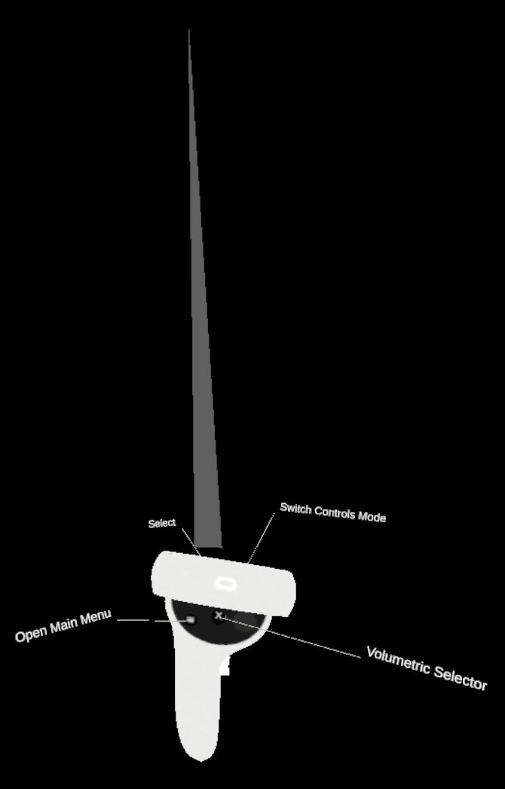
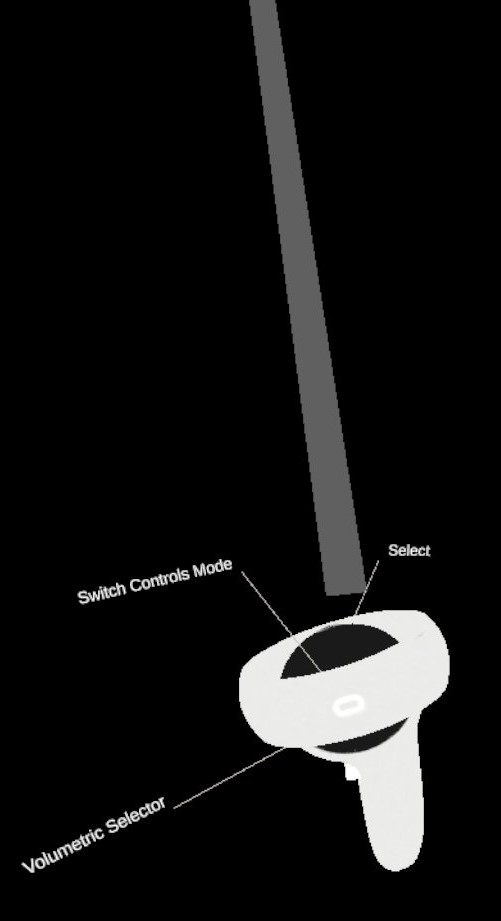
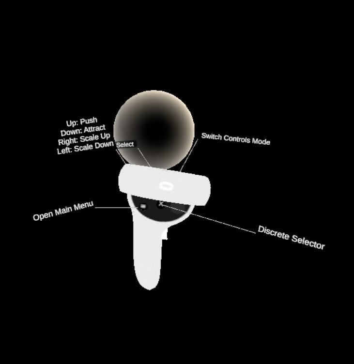
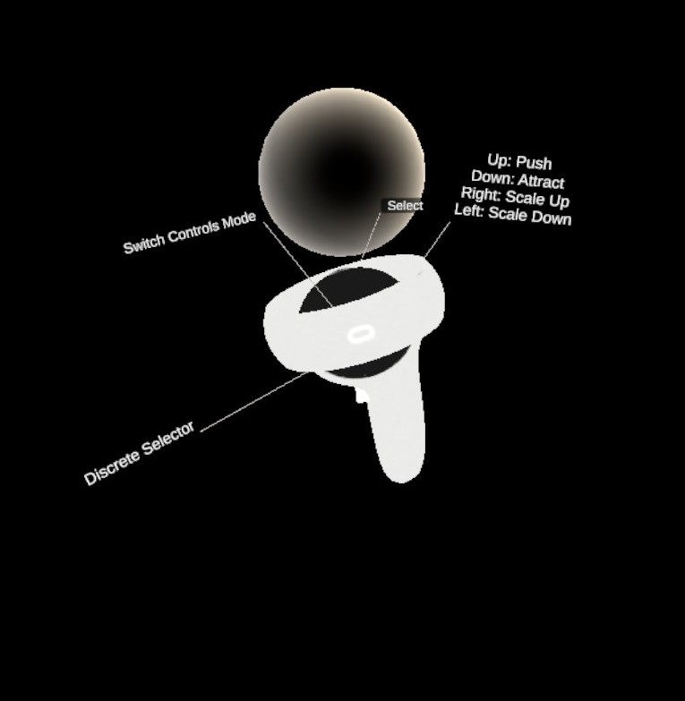
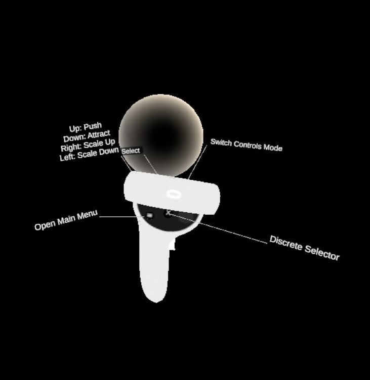
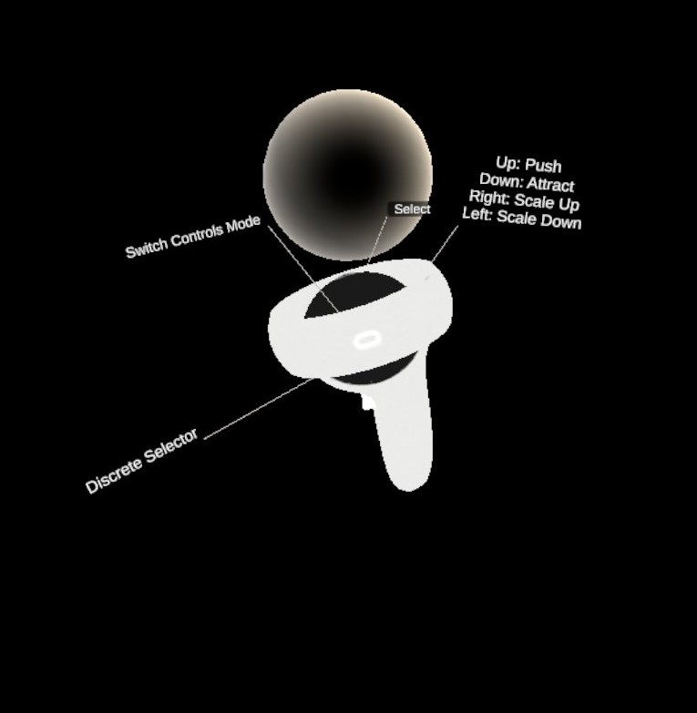

Groups
This is a set of controls to define custom groups of elements in the Dive Scenes which will be recognizable by color and accessible in the Groups Menu. There are two alternative selectors to build custom groups which can be switched by pressing either the Primary Button of the respective controller.
Ray selector
Adds elements one-by-one to the group being built. Point at the element with the ray and press the Front Trigger. The element is added to the group if it is not already in the group. Otherwise, the element is removed.

 
Volumetric Selector
Uses a sphere as the selector. Any elements that collides with the sphere while the Front Trigger is pressed are added from the group if they are not already in it. Otherwise, the element is removed. Scale and position of the sphere can be controlled using the Joystick.
 



KNOWN LIMITATION: It is not possible to modify the content of a group (remove od add elements) once it has been validated; you can only remove the whole group from the group menu.